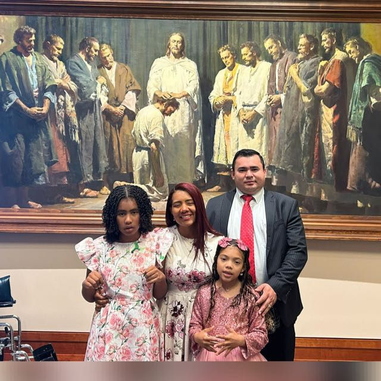

Wilfredo José Marapacuto Verástegui | WDD 130
My name is Wilfredo Marapacuto, I am from Barquisimeto, Venezuela🇻🇪. I live in Utah with my family, my beautiful Wife and my two beautiful daughters. In my country i studied a Bachelor Degree in Physiotherapy. Although I am not currently practicing my profession in the US, I've studied and obtained a license as an Immigration Consultant in the state of Utah, an IRS Tax Preparer, and a Life and Health Insurance Agent. This has helped me start a business in Provo. My goal is to earn a bachelor's degree in software development, attend law school, and become a lawyer.